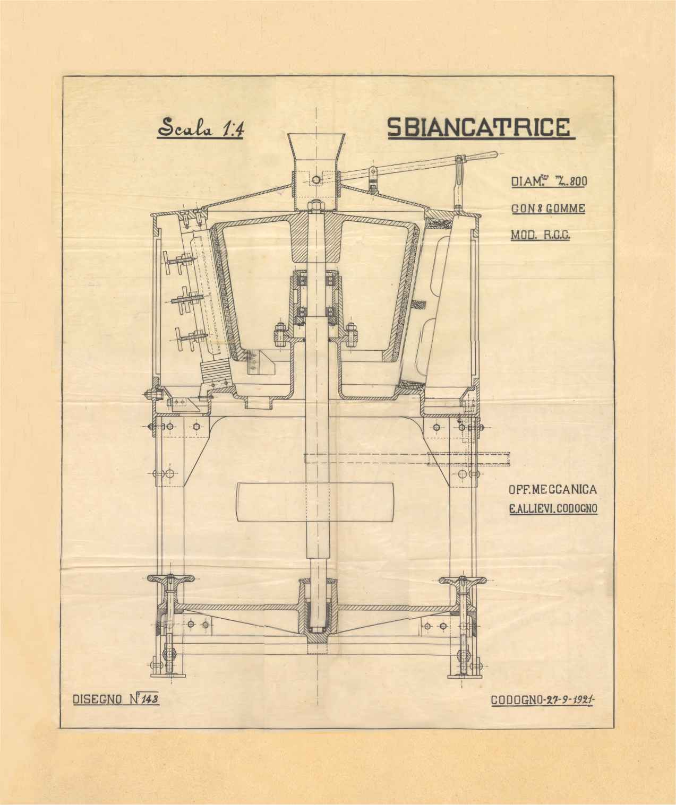
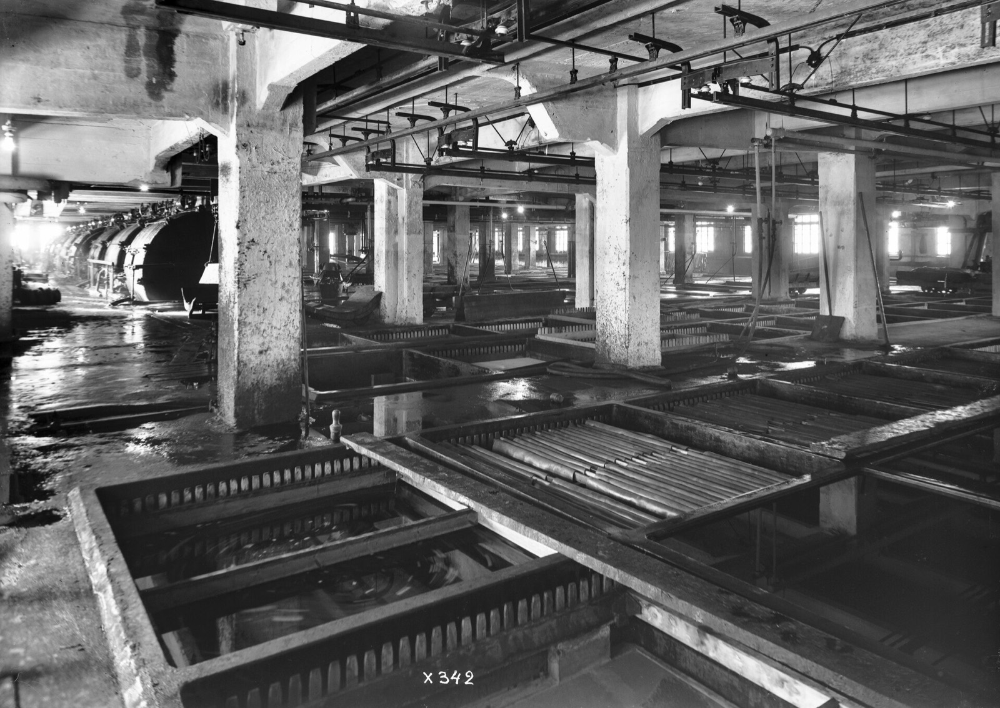

The line stops.
QualiK answers.
QualiK captures what your maintenance technicians know and gives it to every technician, in every plant, the moment a machine stops.
Get in touchTry it: pick an alarm, then a cause. The service report writes itself. Sample data.
Alarms · Plant 1
Servo drive overtemperature
Probable causes
Procedure
- Stop the filler and lock out the drive cabinet.
- Remove the fan guard, clean the fan and the filter.
- Check the cabinet temperature is back in range.
- Reset the drive and restart at reduced speed.
- Manual, section 7.3, page 142
Service report
- Machine
- Filler 2 · Line 4
- Fault
- F3041 Servo drive overtemperature
- Cause
- Cooling fan blocked by product dust
- Action
- Cleaned cooling fan, replaced cabinet filter
- Spare parts
- Cabinet filter FK-220 × 1
- Hours
- Added by the technician
- Outcome
- Confirmed after restart
Installers, plumbers, electricians: meet QualiK Field.
Your technicians send photos and a voice note on WhatsApp. QualiK Field writes the service report and prepares the paperwork, ready for you to sign.
Air conditioning · Heat pumps · Boilers · Plumbing · Electrical
See QualiK Field

2 out of 3
maintenance technicians that companies look for are hard to find.
Source: Unioncamere–Italian Ministry of Labour, Excelsior system, July 2026 (66.5%).
Italian industry was built by people who know how to fix machines. That knowledge lives in the heads of a few people. And every year, some of it retires.
When a line stops at 3 a.m., who answers?
Every repair is knowledge. We make it available to everyone.
QualiK captures the experience of maintenance technicians and makes it available to every technician, in every plant, the moment a machine stops.
Who it's for
Machine builders with after-sales service. Your best technicians spend their days on the phone or on the road. QualiK gives every service technician, and your customers, the procedure and the past cases. It improves the first-time and remote fix rate, and cuts field visits.
Groups with plants in several countries. The same machine fails the same way in every plant, and each plant solves it alone. QualiK shares confirmed repairs across plants and answers in the technician's language. It improves hours of downtime.
Teams close to retirement. Your senior maintenance technicians carry decades of fixes nobody wrote down. Guided interviews turn them into validated procedures before they leave. It improves the time a new technician needs to become autonomous.
One machine first. We start with one machine and its most frequent alarms, and measure the results together. The data stays yours, the plant connection is read-only, and your IT/OT team approves it.
How QualiK works
First, it captures what already exists.
PLC alarms, voice notes, photos, manuals, drawings and past service reports. Nothing changes in how your technicians work.
Then it links every cause to its source.
Causes, procedures and past cases are tied together. Every link points back to the manual, the drawing or the repair it came from.
Finally, it answers and writes the report.
The technician gets the answer, the service report fills itself in, and each confirmed repair adds to a memory shared across plants.
With QualiK, and without
Machines can be bought again. The experience of the people who fix them can't.
| Without QualiK | With QualiK |
|---|---|
| Alarm | Alarm |
| Searching for whoever knows | Procedure with source |
| Field visit | Fixed on the first visit |
| Report never written | Automatic service report |
| Knowledge retires | Knowledge stays and grows |
Everything QualiK does
No feature matches. Try “report”, “alarm” or “language”.
Said once. Written up.
Service report
- Machine
- Filler 2
- Fault
- Filler 2 stopped with a drive overtemperature alarm
- Cause
- The cooling fan was blocked with product dust
- Action
- Cleaned the fan and replaced the cabinet filter
- Spare parts
- Filter FK-220
- Hours
- 1.5 h
- Outcome
- Machine restarted and running

What stays in your hands
- Your data stays yours.Manuals, drawings, reports and repairs belong to you. They are used to answer your technicians and nobody else's.
- Every answer cites its source.The manual page, the drawing sheet or the past repair is always one tap away, so the technician can check before acting.
- The system suggests. People decide.Technicians confirm, supervisors approve, engineers validate. Nothing enters the memory unconfirmed.
- Read-only, approved by your IT/OT team.QualiK reads alarms from the plant. It never sends a command to a machine.
Let's work together
We don't start with a rollout. We start with one machine and its most frequent alarms.
We connect in read-only mode, collect the manuals, the drawings and the old service reports, and sit down with the technicians who know that machine best.
Then we measure the results together: faults fixed on the first visit, hours the line was down, how quickly a new technician could work alone.
If the numbers move, we add the next machine.
Founder, QualiK

Run an installation business?
QualiK Field turns your technicians' WhatsApp voice notes and photos into service reports and paperwork ready to sign. For HVAC installers, plumbers and electricians.
See QualiK FieldStart with one machine.Tell us which one.
Write a few lines about the machine and the alarms that stop it most often. We reply personally.
We use your details only to reply to you.